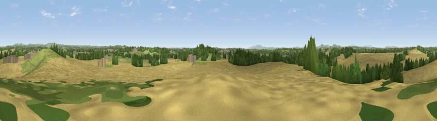

Viewpoint near Elmbridge
#28725 in England · top 60% of its area beats it · near ElmbridgeWhere it is
The exact computed spot (SO 89825 65675). Click the marker for map links.
The view, rendered

A 360° render of this exact spot computed from the terrain model, tree cover and land cover — summer colours, afternoon light, calibrated against photographs of famous viewpoints. Real trees, hedges and buildings will differ in detail.
The panorama
Grey silhouette: terrain skyline in each direction (720 bearings, Earth curvature and refraction included). Dashed green: skyline with trees (+15 m) and buildings (+8 m) as obstacles. Blue strip: how far the ground is visible on each bearing.
Where the view opens
Wedge length = distance to the farthest visible ground on that bearing (vegetation-aware). Rings at 10, 25 and 50 km.
What fills the view
61% cropland · 20% grassland · 15% woodland · 4% built-up
Angular shares of the visible panorama (visual magnitude), not map area. Landscape diversity 0.45 (0–1 Shannon).
Key numbers
More beautiful places nearby
The staircase of upgrades: each row has a higher view potential than everything closer. Driving times are estimates from straight-line distance, calibrated against real road routing — check an actual route before setting out.
| Place | Direction | Drive | Score |
|---|---|---|---|
| Viewpoint near Elmbridge | NE · 0 km | ~2 min | 48.3 |
| Viewpoint near Elmbridge | NNW · 2 km | ~5 min | 50.4 |
| Newland Common | S · 5 km | ~11 min | 52.0 |
| Viewpoint near Hanbury | ESE · 6 km | ~12 min | 57.1 |
| Viewpoint near Dodford | NNE · 7 km | ~14 min | 57.7 |
| Viewpoint near Hanbury | SE · 7 km | ~14 min | 62.1 |
| Stagborough Hill | WNW · 13 km | ~23 min | 63.8 |
| Viewpoint near Abberley | W · 14 km | ~25 min | 77.5 |
52.28911, -2.15059 · source: screening · position refined by local search. Computed location — check access rights before visiting.